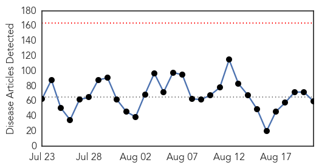
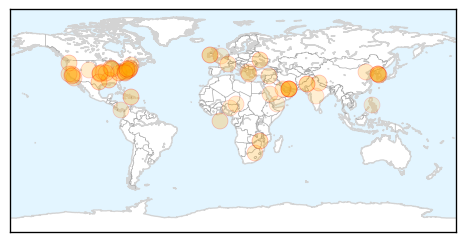

Yellow Fever
30-Day Web Trend
0 alerts, 0 warnings

30-Day Twitter Trend
0 alerts, 0 warnings

Article Locations


Article Confidences

Top Articles:
-
No articles found for Aug 21, 2015
Top Tweets:
-
No tweets found for Aug 21, 2015
Unknown
30-Day Web Trend
0 alerts, 0 warnings

30-Day Twitter Trend
Article Locations

Article Confidences
Top Articles:
- 0.994
- Patient with possible MERS symptoms reported-INSIDE Korea JoongAng Daily
- 0.985
- Suspected MERS case reported in S. Korea
- 0.983
- Thailand confirms first MERS case
- 0.980
- Suspected MERS case reported in S. Korea
- 0.971
- Swine fever hits Mash Central
- 0.967
- New deadly virus surfaces in the US, vaccine not yet available
- 0.966
- Hotel’s cooling tower ID’d as source of New York Legionnaires’ outbreak
- 0.960
- Lyme disease declared endemic in Kanawha County
- 0.952
- Legionnaires’ disease claims 8th New York victim
- 0.919
- Portimão hospital denies tuberculosis outbreak, threatens legal action
- 0.917
- Chicago Tribune
- 0.917
- Chicago Tribune
- 0.917
- Chicago Tribune
- 0.917
- Chicago Tribune
- 0.917
- Chicago Tribune
- 0.917
- Chicago Tribune
- 0.913
- Health officials following people exposed to rabid cat
- 0.902
- Chickenpox Can Be Serious
- 0.896
- Bronx Hotel Source of Legionnaires' Outbreak
- 0.884
- barfblog
- 0.882
- Health officials urge precaution with plague
- 0.823
- Residence had several confirmed cases of hot tub lung
- 0.818
- Five reasons to not totally panic about ticks and Lyme disease
- 0.816
- Deadly Pigs: Salmonella in Pork Products In Washington
- 0.763
- Georgia native may be second Yosemite plague victim, health officials say
- 0.758
- Just 4 govt shrinks for a crore in Uttarakhand
- 0.752
- Swimming Pool Parasite Sickens Three In Johnson County
- 0.723
- Kan. officials investigate a swimming pool parasite
- 0.721
- SA buckling under strain of deadly TB
- 0.720
- Romain Grosjean: "Creo que podemos tener un fin de semana bastante bueno"
- 0.716
- Man suspected of MERS confirmed negative
- 0.708
- How "DNA detectives" are helping solve the rise of superbugs
- 0.706
- Legionnaires’ outbreak officially over, source of virus identified as Opera
- 0.690
- The Caledonian-Record
- 0.686
- European hard-left looks to Varoufakis amid Greek turmoil
- 0.686
- North Korea orders frontline troops onto war footing
- 0.686
- Macedonia allows ‘limited number’ of migrants to cross border from Greece
- 0.686
- White House says air strike killed IS group number two Hajji Mutazz
- 0.686
- Suspect arrested after attack on Amsterdam-Paris high-speed train
- 0.684
- HSE insists unvaccinated babies not at higher risk of TB
- 0.680
- Police in Macedonia fire tear gas on migrants
- 0.680
- New fires break out at China's Tianjin blast site
- 0.662
- Plague Cases in California: What's Behind the Rise?
- 0.652
- Johnson County inspecting pools after residents diagnosed with cryptosporidiosis
- 0.651
- Bronx hotel accuses NYC of holding back Legionnaires info
- 0.644
- Report: 4 W.Va. counties declared endemic for Lyme disease
- 0.637
- Indonesia urges haj pilgrims to be vigilant on MERS
- 0.617
- VSV Continues to Aff...
- 0.616
- Georgia tourist possibly has plague, is expected to recover
- 0.610
- Banana disease confirmed in N. Queensland: Aussie authorities - Xinhua
Showing top 50 articles...
Top Tweets:
-
No tweets found for Aug 21, 2015